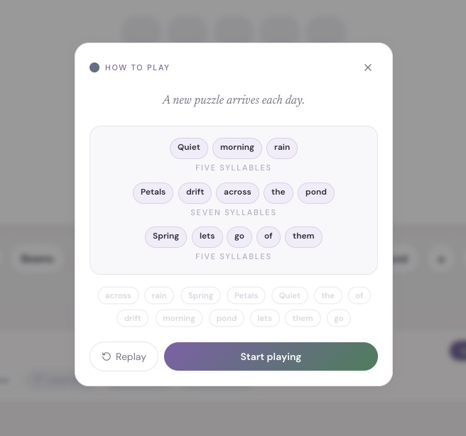
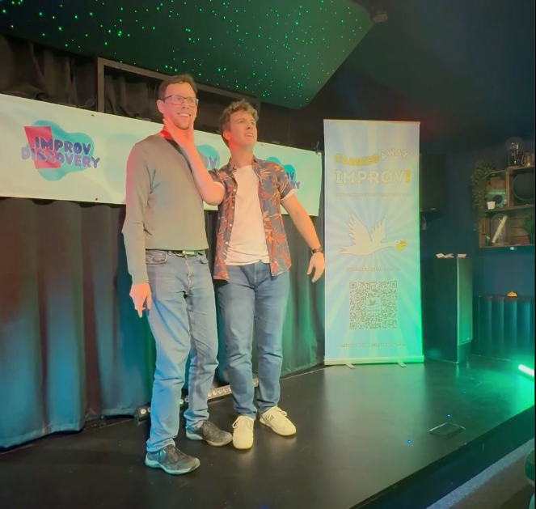
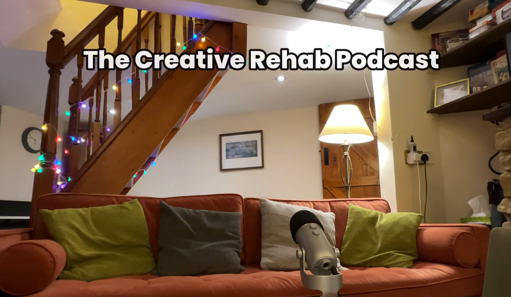
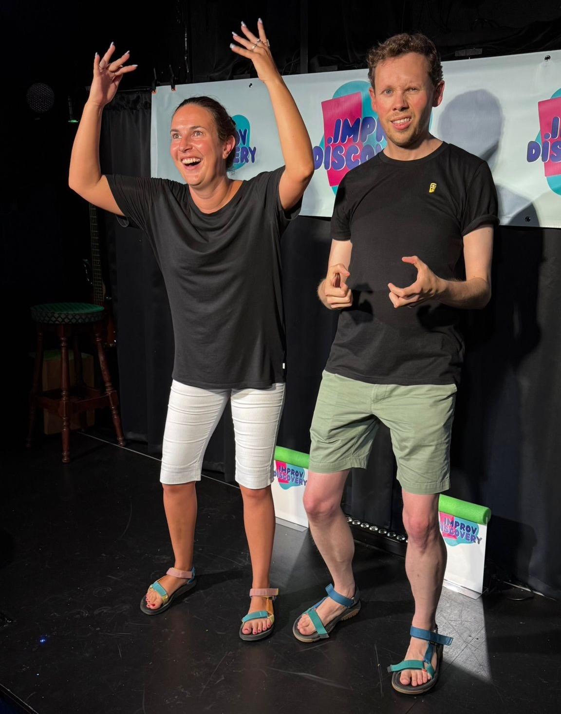

Work
Projects

Classic Comic Art

Haiku Craft

Hi, I'm
Software engineer, teacher & improvisor
with a passion for exploring creativity
in all its forms.
About
I'm Anthony Errington — a software engineer, teacher and improvisor with a passion for exploring and nurturing creativity in all its forms.
Much of what drives me is:

Work


Listen
I run a podcast called Creative Rehab where I talk with guests about creativity, lost and (re)found.
In some episodes we also delve into the art of Improvisation and Improv Comedy — exploring what makes it so fun, freeing and fantastical.
Episodes are added regularly and can be found on Spotify, Apple Podcasts and YouTube.
Subscribe to join the conversation about creativity!

On Stage
What is Improv? It's the art of unplanned, unscripted theatre where we create stories in the moment. It might look like magic, but we're actually following simple and accessible principles…
I perform regularly as part of an ensemble with the Awkward Actors and with Amelia Monks as the duo "Small Talk, Big Feelings". If you're in the Oxford area, come and watch us!
Improv is not just about performing — it can be a great way to build confidence and life skills. I teach the foundations of Improv as a member of the faculty for the Improv in 6 Acts course.
I've written here about the applicability of Improv to many spheres of life beyond the stage.
Get in touch
I love connecting with like-minded creative souls and will do my best to respond.
anthonycreates@tutamail.comMy current local time is